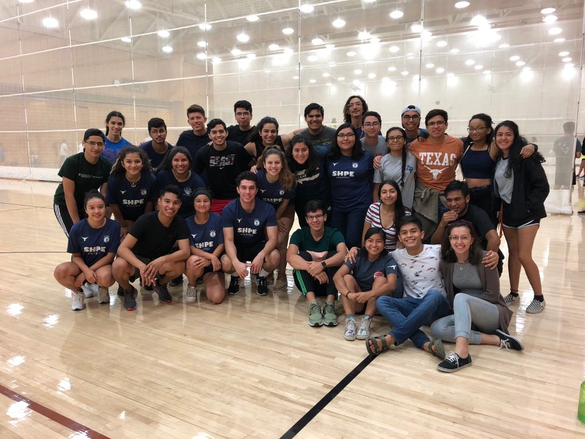
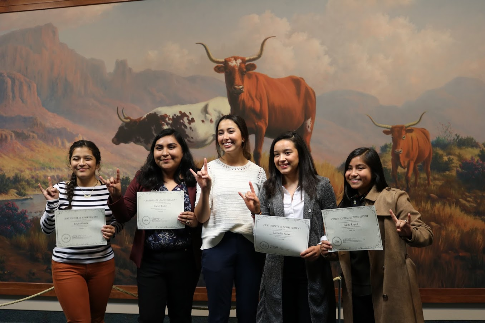
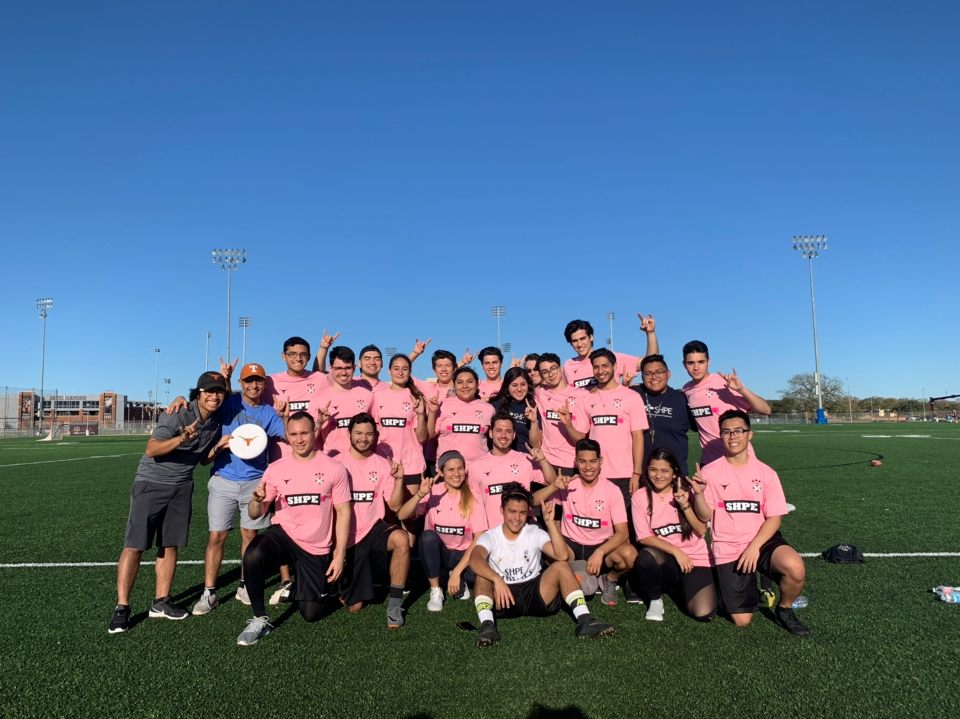

General Meetings
The general meetings are utilized as a way to inform members about important events and
opportunities. These bi-weekly meetings consist of guest speakers that are usually provided
by the corporate supporter for the meeting. Guest speakers present on topics such as:
interview skills, resume tips, effective study habits, business etiquette, leadership,
community outreach, and professional development. Companies are recognized for their
generosity and community involvement through advertisements before and during meetings. Food
and beverages are provided.
(Previous Attendance: 140 or more)

Manitos & Manitas Mentoring Program
This Manitos/Manitas, or M&M, program provides underclassmen with a “Big Brother/Sister” to
mentor and assist them during their transition to UT. Upperclassmen will inform
underclassmen of all events and meetings held by SHPE to keep them involved in the
organization. They will also help underclassmen members succeed throughout their first or
second year at UT by providing both academic and career advice. In addition, this program
allows upperclassmen to build their leadership, communication, and interpersonal skills. The
Manitos/Manitas support network connects students with resources and creates lasting
friendships within the organization. This year we aim to have at least 50 pairs, 5 events
focused on the 5 pillars, and improve the structure of the program by adding more monthly
goals for pairs. Corporate representatives are encouraged to participate in the program by
hosting professional development events.
(Program Size: 100)

SHPE Athletics Program
SHPE organizes intramural teams throughout the school year in order to promote a healthy
lifestyle and create a sense of camaraderie. SHPE members have participated in flag
football, volleyball (2 teams), basketball, outdoor soccer (2 teams), indoor soccer,
softball, and other sports. SHPE has been known to make the playoffs in numerous sports each
year. We also organize groups for running, weightlifting, and dancing so members can
participate in local competitions. Supporters of SHPE Athletics will have their company name
printed on team t-shirts.
(Program Size: 50)

SHPE Señoritas Program
SHPE Señoritas is a SHPE program that strives to unite Latinx female identifying engineers.
It was established in order to increase the number of females by providing a stronger
support system through community building, community service, and professional development
events. This year we aim to have 2 events with SHPE Austin Professional Chapter, providing a
great opportunity for corporate representatives to interact with our membership.
(Program Size: 40)
SHPEs and Salsa Formal
The SHPE’s and Salsa Formal is one of UT-SHPE’s flagship events. SHPE chapters from all
across Texas, such as Texas A&M University, University of North Texas, the University of
Texas at San Antonio, the University of Houston, and Rice University are all invited to
attend the event in hopes of uniting the region and celebrating the conclusion of a
successful academic school year. The Austin SHPE Professional Chapter, as well as alumni,
and the UT student chapter of the Society of Women Engineers are also invited. This event
provides a great networking opportunity for our membership. This is a great opportunity for
corporate representatives to be recognized at end of the year banquet and celebrate
UT-SHPE’s accomplishments.
(Previous Attendance: 100)

Lonestar Showdown
Once a semester, SHPE hosts Lonestar Showdown, an athletic tournament between different SHPE
student chapters around Texas, including UTSA, Texas A&M, UH, and Rice University. This
event is hosted by a different chapter every semester and it brings together members to
enjoy a day of athletic competitions, and network with one another and industry
representatives. This is a great opportunity to interact with engineering students from
different schools at the same time. Supporters of the SHPE Lone Star Showdown will have
their company name printed on the t-shirts and trophy; they are also welcome to referee the
competitions.
(Previous Attendance: 75)